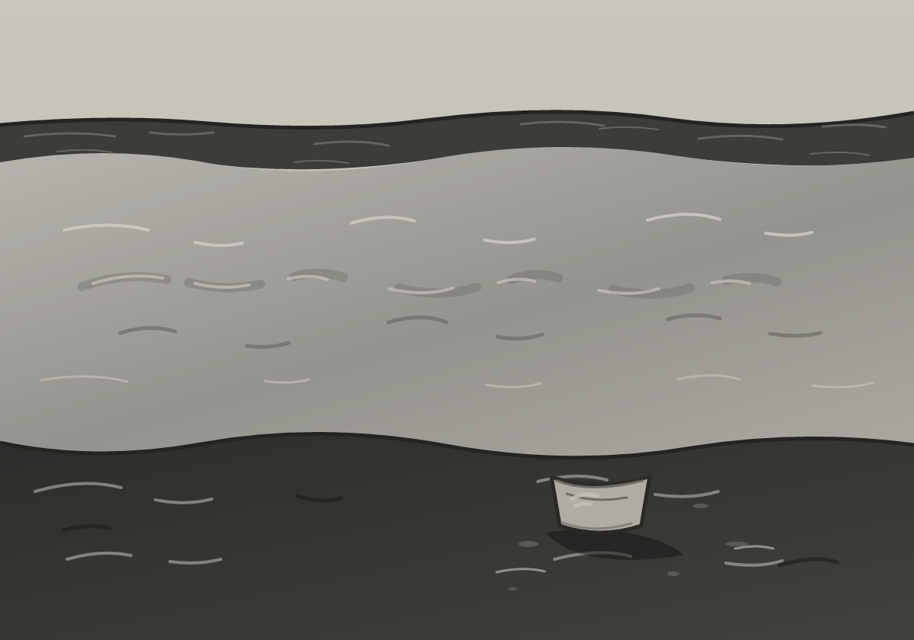

Djed Dalles · Charcoal drawing
The Sill Under Water
From What Crosses Back, an ongoing sequence.

A plain cup rests on the near bank. Farther out, a broken submerged sill appears and vanishes beneath the current. The water keeps moving over a threshold whose shape is only partly remembered.
I removed the gates from the earlier study and kept only their underwater remainder. The cup stays clear of the river; its small rubbed patch carries use without becoming a face or an emblem.